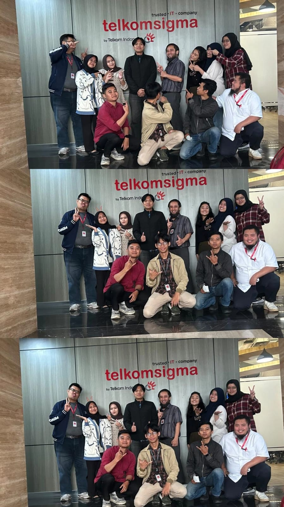
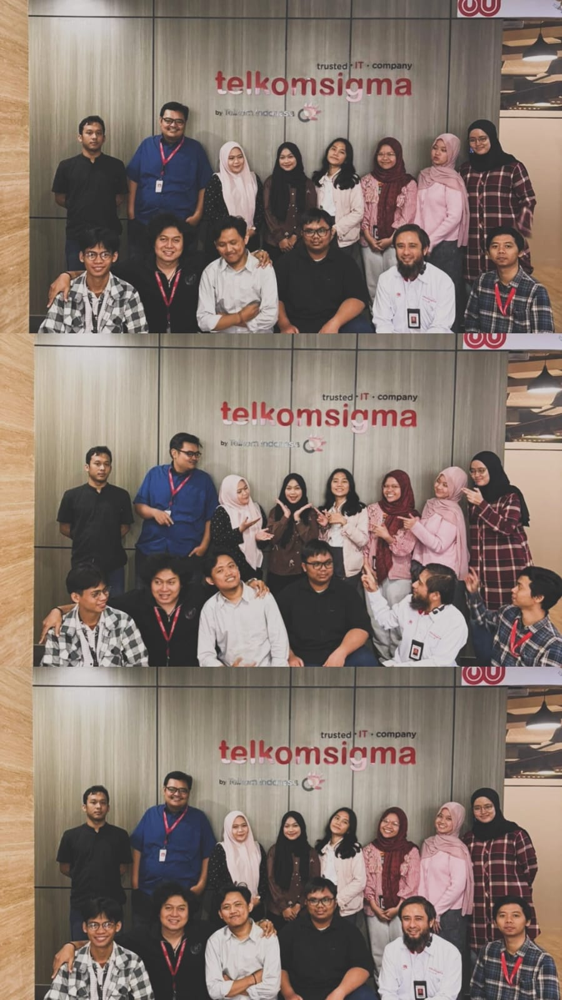

Pengalaman akademik, kegiatan, dan praktik yang ikut membentuk proses belajarku.
AUG – OCT 2026
Internship
Security Operations Center (SOC) Intern
Telkomsigma · Infrastructure and Cyber Security Delivery Operation
Menganalisis security alert dari XDR Trend Vision One, SIEM Antarex Internal, dan Wazuh.
Menganalisis alert High & Critical dari sumber Palo Alto dan Fortigate.
Mengolah data alert, menyusun pivot table, dan membuat laporan analisis.
Mengamati serta mendokumentasikan proses migrasi SIEM dari Wazuh ke Antarex.

Dokumentasi bersama tim Telkomsigma

Momen kebersamaan selama kegiatan
2025
Campus activities
Seminar & Socialization Team
Berpartisipasi dalam tim seminar dan sosialisasi; pengalaman mencakup penyampaian materi, desain poster, dan dukungan kegiatan.
2024
Team coordination
Social Collaboration Team Coordinator
Mengoordinasikan kolaborasi tim dalam kegiatan sosial dan membantu pembagian tugas agar kegiatan berjalan terarah.
2022 – 2023
Content creation
JNT Cargo Content Creator
Membuat konten untuk mendukung komunikasi dan promosi digital.
ACADEMIC BACKGROUND
Education
🎓
S1 Sistem Informasi
Universitas Bina Sarana Informatika · September 2023 – sekarang
IPK 3,76 / 4,00
Mata kuliah relevan: Information Systems Security, Database Security, Computer Networks, Database Applications, Data Science Algorithms, UI/UX Design, dan Business Intelligence.